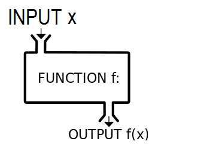

The Idea of Functional Programming
By Tamer Khraisha
A lot of people these days are talking about the idea of functional programming. The term functional
programming refers to a programming paradigm or in simpler words, a style of coding. Some other paradigms are for example imperative programming
where we tell the machine to do something first and then do something else and so on. Object-oriended programming is another
paradigm where objects are the core idea. In functional programming, functions are the essential element.
I felt inspired by Anjana Vakil who gave some amazing talk about functional programming in Javascript and therefore this post will be written based on her talk. In the object-oriented Javascript, it is very
easy to have a bug when using the inheritance, protoytping options. To avoid bugs introduced by the use of
object oriented programming, we can make use of functional programming. Functional programming is easier to
build, maintain and debug when working on a project.
In functional programming we want to do everything using functions. This means that we want to express
our program in terms of functions. A function is something that takes an input and converts it into output.
So in functional programming we might want to think about the flow of data as inputs and outputs
through the program. Instead in object-oriented programming, we might think about the objects, the
relationships between them, while in an imperative style we think about the control flow of instructions.
Non functional example in Javascript:
var name = "Tamer"
var greeting = "Hi, I am"
console.log(greeting+name)
This is an imperative style of coding, where we tell the machine to first create the variable name, then the variable greeting and finally printing the phrase 'Hi, I am Tamer'.
A functional way of doing the same as above would be as follows:
function greet(name) {
return "Hi, I am"+name;
}
greet("Tamer")
Another important aspect of functional programming is to avoid side effects that can be done by using 'pure' functions. A side effect is anything that a function might do that is not related to the process of taking an input and returning the output. For example, printing something to the console is not something that a function is returning as an output. In this case we say that the function is doing something on the side of the function. Or if a function is reading a globally defined variable which is defined outside the function, this also would make the function not pure. So in few words, a pure function is a function that takes some input, uses only that input to do something and returns some output.
for example, the following function is not pure since it defines a variable outside and uses it inside. It isn't pure also because the return value is not what we care about (prints to the console).
var name = "Tamer"
function greet() {
console.log ("Hi, I am"+name)
}
A pure version of the above function looks like this:
function greet(name){
return "Hi,I am" + name
}
In this case the function is all about taking an input (name) and returning an output.
Another key aspect of functional programming is the use of higher order functions. This means that functions can take other functions as input or that can return other functions as output. This would be similar to treating functions as objects that can be used inside each other. So we can think of a code as a tree, were each function is within another function which within another one and so on. Higher order functions are very common in functional programming.
example:
function makeadjectifier(adjective){
return function(string){
return adjective + " " + string
}
}
var coolifier = makeadjectifier("Cool")
makeadjectifier("Conference)
"Cool Conference"
In this example, makeadjectifier is a higher order function which returns a function.
In functional programming we tend to avoid iterating, for example by using for loops. In functional programming we might want to use map or reduce or filter which are higher order functions.
Another important concept in functional programming is immutability of data. Mutation here refers to the data content of an object.
example of mutable data
var test = ["H1","H2","H3];
test[2] = "H4";
This is not functional. The point of avoinding this in functional programming is to avoid changing data content of an object unintentionally. This is good when we construct complex and big codes.
example with immutation:
var test = ["H1","H2","H3];
var newTest = test.map ( function(rm){
if (rm=="H3") {return "H4"}
else {return rm}
});
newTest will be ["H1", "H2", H4"]
test will be ["H1","H2","H3]
In this example we have not changed anything in test.
Persistent data structures.
In the example above, we show how to preseve data immutability we had to create a new copy of the existing array. This might be fine for small objects, however when we have big objects we don't want always to make copy of everyting for both efficiency and storage reasons. One way to get around this problem in functional programming is to make use of persistent data structures.
I would reccomend to read this article to know more about persistent data structures and why they are efficient.
This is also an interesting video to watch this video